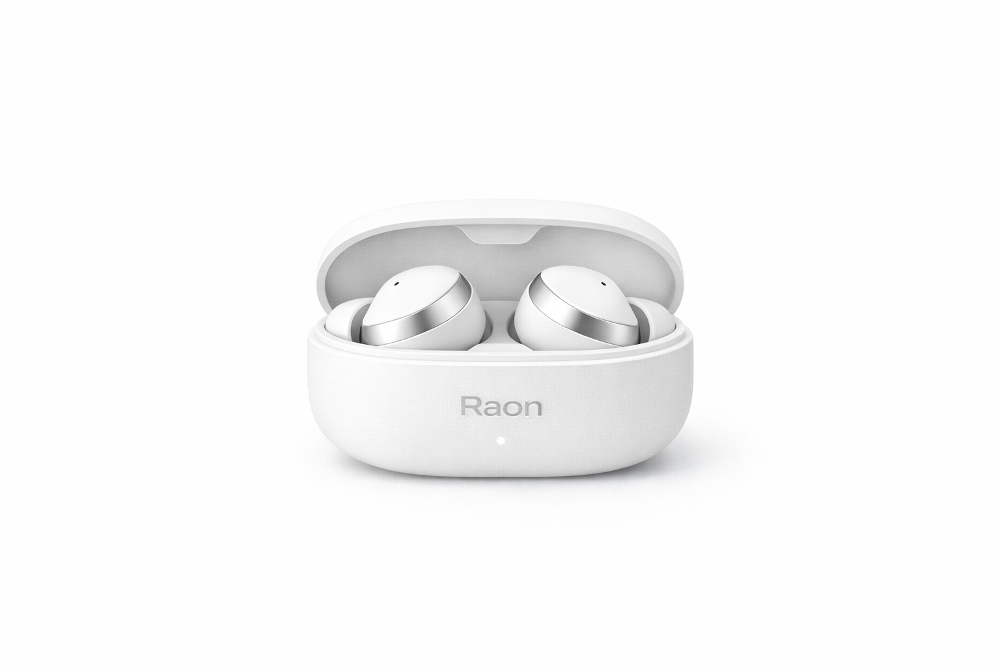
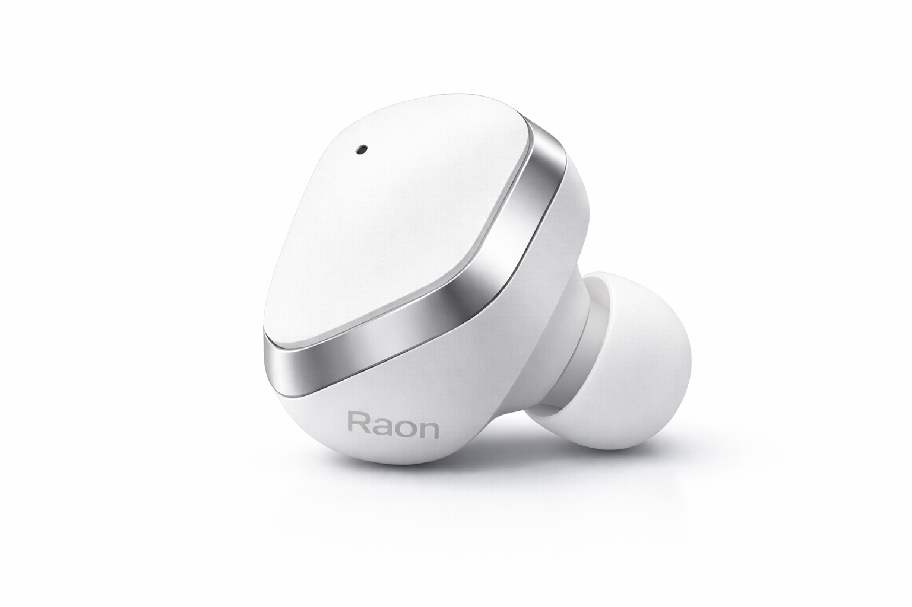
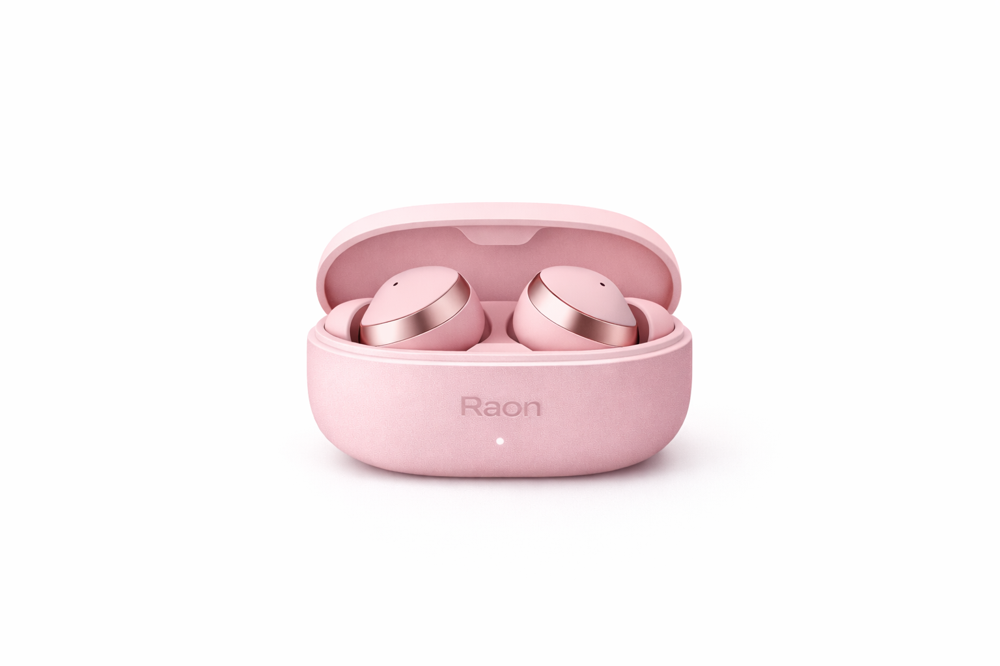
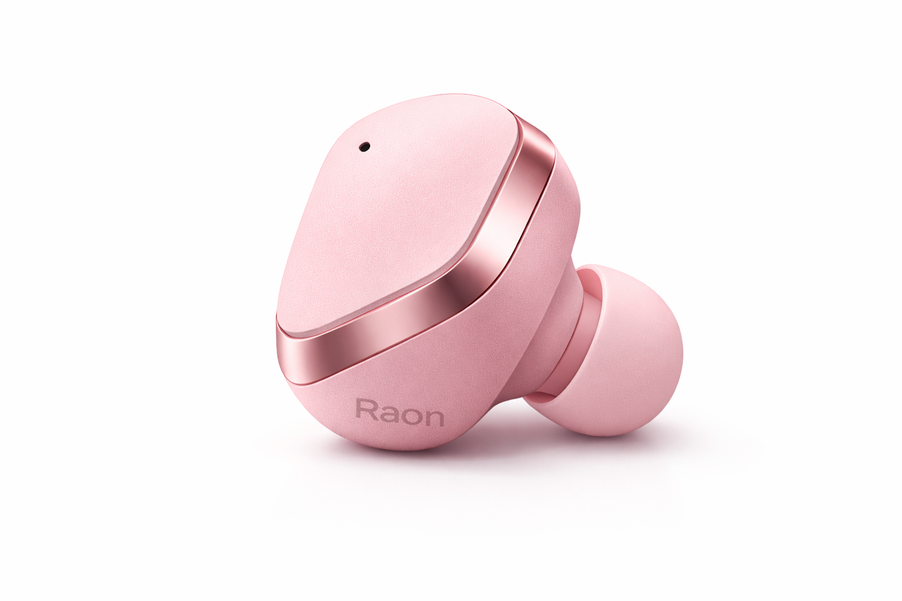
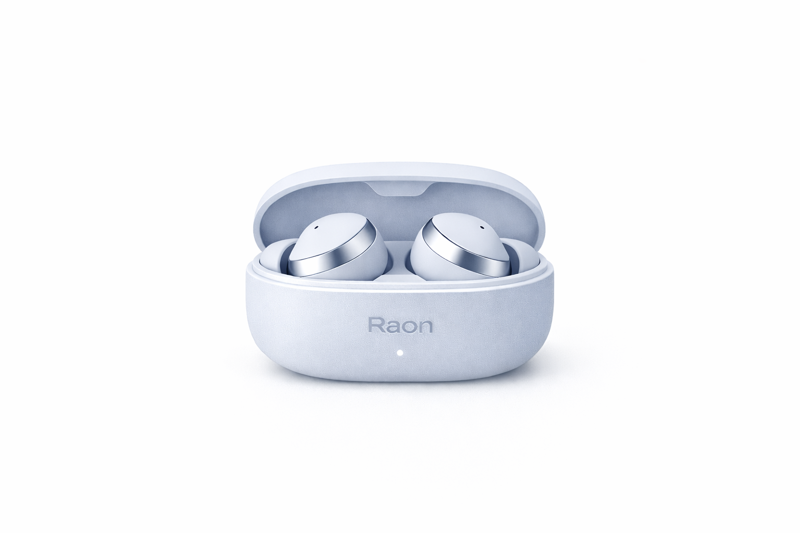
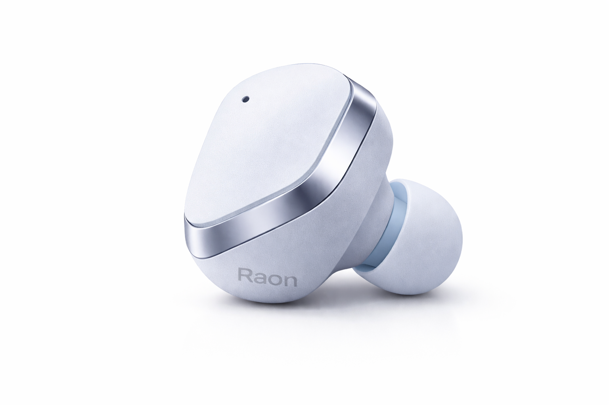
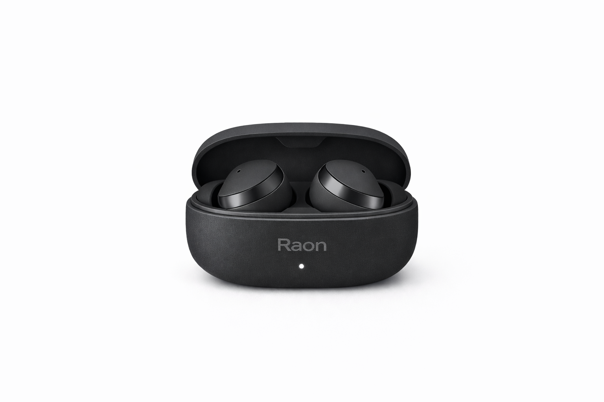
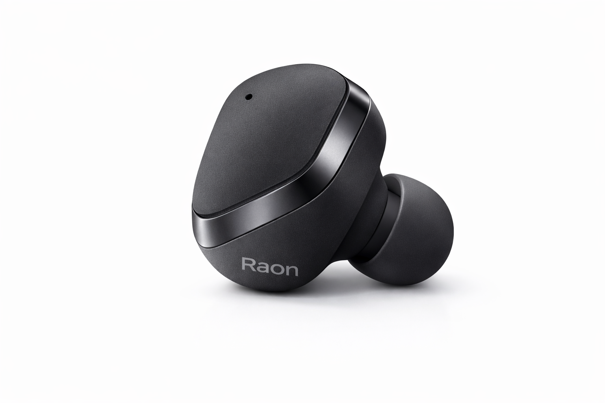
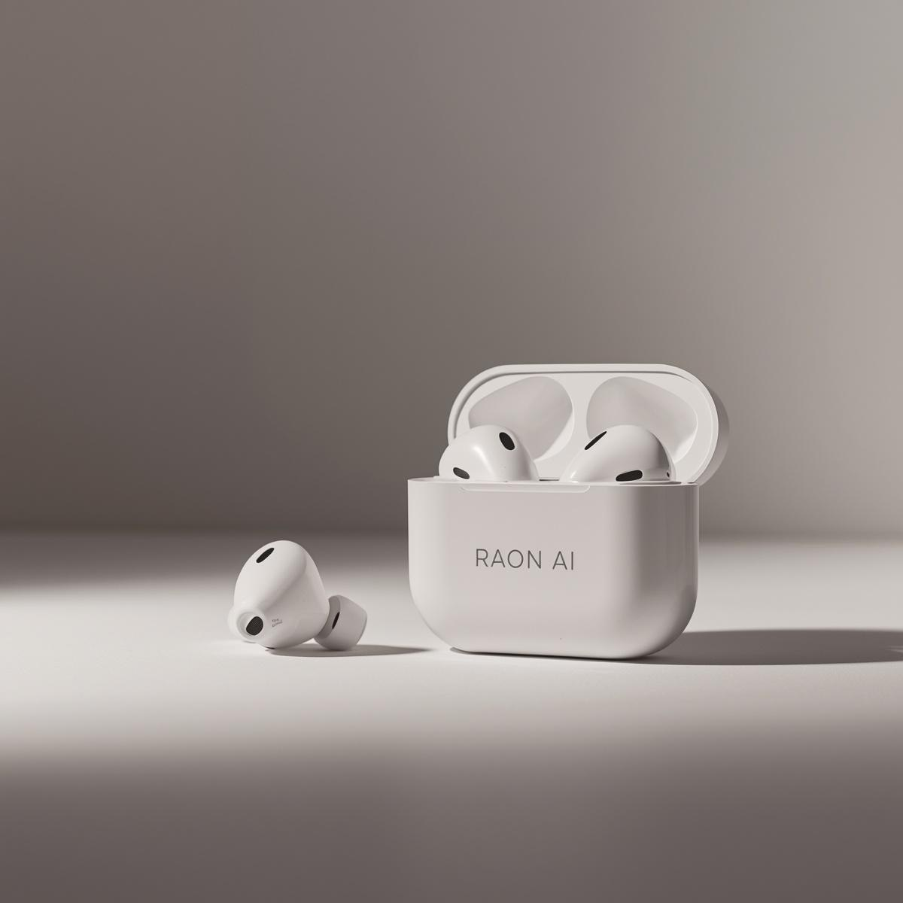
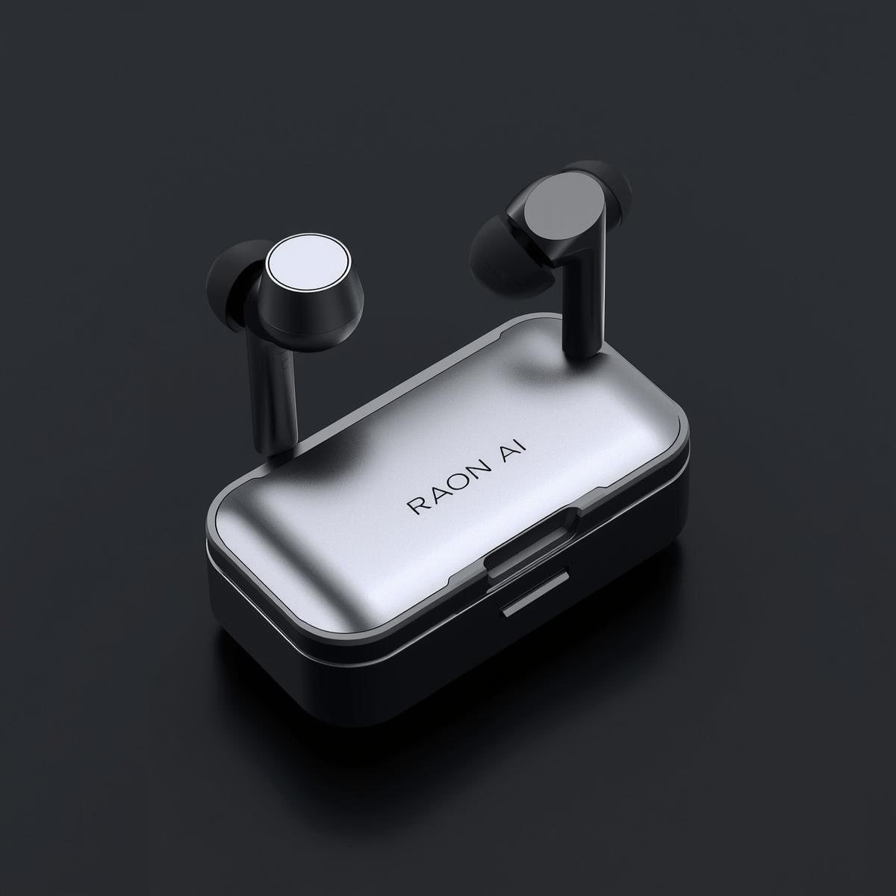

White
깨끗하고 선명한 기본 톤
가장 직관적인 첫 인상을 주는 화이트 컬러. RAON AI의 시작을 가장 명확하게 보여줍니다.
ChatGPT 기반 AI 이어폰
RAON AI는 음성 인식, 실시간 번역, AI 노이즈 캔슬링을 하나의 경험으로 연결해 일상과 업무, 이동과 학습의 흐름을 더 자연스럽게 만듭니다.


About RAON AI
RAON AI는 인공지능 기술을 기반으로 일상 속 소통과 청취 경험을 더 빠르고 더 자연스럽게 바꾸는 제품을 설계합니다.
우리는 이어폰이 단순한 오디오 기기가 아니라, 언어의 장벽을 낮추고 필요한 정보를 더 가까이 연결하는 인터페이스가 되어야 한다고 믿습니다.
보기 좋은 제품을 넘어, 실제 생활에서 자주 사용하게 되는 기능과 명확한 사용 이유를 가진 제품만을 만듭니다.
Product Introduction
RAON AI 이어폰은 단순한 오디오 기기가 아닙니다. 듣고 말하는 모든 순간을 더 빠르고 정확하게 연결하며, 실시간 번역과 음성 명령, 노이즈 제어를 하나의 흐름으로 제공합니다.
RAON AI Earbuds
White · Pink · Sky Blue · Black · Silver
이어폰 · 충전 케이스 · USB-C 타입 케이블
ChatGPT · 여행 · 회의 · 학습 · 음악 감상
Lineup
White
가장 직관적인 첫 인상을 주는 화이트 컬러. RAON AI의 시작을 가장 명확하게 보여줍니다.
Pink
부드럽지만 약하지 않은 핑크 컬러. 일상 속 오브제로서의 감각을 더 선명하게 전달합니다.


Sky Blue
밝고 시원한 인상으로 일상과 학습, 이동 환경에 자연스럽게 어울리는 스카이 블루 라인업입니다.


Black
선명한 대비감이 돋보이는 블랙 컬러. 깔끔한 실루엣과 강한 인상을 동시에 보여줍니다.


Performance
ChatGPT 기반 음성 인식을 통해 정보 검색, 일정 확인, 다양한 명령을 음성으로 처리합니다.
외국어를 실시간으로 인식하고 번역하여 양방향 대화를 더 자연스럽게 이어줍니다.
주변 환경을 분석해 필요한 소리는 살리고 불필요한 소음은 줄여 더 집중된 청취 경험을 제공합니다.
고성능 마이크를 통해 이동 중에도 또렷하고 안정적인 통화 품질을 유지합니다.
일상 사용에 충분한 배터리 지속 시간을 바탕으로 하루의 흐름을 안정적으로 지원합니다.
ChatGPT 활용, 해외 여행, 외국어 대화, 업무 회의, 학습 집중, 음악 감상에 적합합니다.
Scenarios
Signature Collection

정제된 실루엣과 밀도 높은 인상을 강조한 시그니처 모델

개방감 있는 형태와 선명한 구조감을 보여주는 프리미엄 라인

세로형 라인과 강한 대비로 존재감을 극대화한 디자인
Customer Support
제품 문의 및 상담은 인스타그램 DM을 통해 빠르게 안내받으실 수 있습니다.